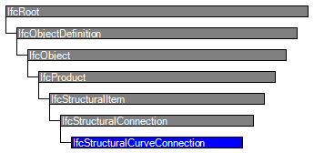

Natural language names
 | stabförmiger Knoten: linienförmige statische Verbindung zur Verbindung flächiger Bauteile, oder Auflagerung |
 | Structural Curve Connection |
| stabförmiger Knoten: linienförmige statische Verbindung zur Verbindung flächiger Bauteile, oder Auflagerung |
| Structural Curve Connection |
| Item | SPF | XML | Change | Description | IFC2x3 to IFC4 |
|---|---|---|---|---|
| IfcStructuralCurveConnection | ||||
| OwnerHistory | MODIFIED | Instantiation changed to OPTIONAL. | ||
| Axis | ADDED |
Instances of IfcStructuralCurveConnection describe edge 'nodes', i.e. edges where two or more surface members are joined, or edge supports. Edge curves may be straight or curved.
HISTORY New entity in IFC2x2.
IFC4 CHANGE Attribute Axis added, allowing for skewed supports. Use definitions added.
Coordinate Systems:
See definitions at IfcStructuralItem. The local coordinate system is established by the reference curve given by topology representation and by the attribute Axis. The local x axis is parallel with the tangent on the reference curve. The local z axis is located in the surface which is created by sweeping Axis along the reference curve and is directed according to Axis. The local y axis is directed such that x,y,z form a right-handed Cartesian coordinate system.
| # | Attribute | Type | Cardinality | Description | C |
|---|---|---|---|---|---|
| 9 | Axis | IfcDirection | [1:1] |
Direction which is used in the definition of the local z axis. Axis is specified relative to the so-called global coordinate system, i.e. the SELF\IfcProduct.ObjectPlacement.
NOTE It is desirable and usually possible that many instances of IfcStructuralCurveConnection and IfcStructuralCurveMember share a common instance of IfcDirection as their Axis attribute. | X |

| # | Attribute | Type | Cardinality | Description | C |
|---|---|---|---|---|---|
| IfcRoot | |||||
| 1 | GlobalId | IfcGloballyUniqueId | [1:1] | Assignment of a globally unique identifier within the entire software world. | X |
| 2 | OwnerHistory | IfcOwnerHistory | [0:1] |
Assignment of the information about the current ownership of that object, including owning actor, application, local identification and information captured about the recent changes of the object,
NOTE only the last modification in stored - either as addition, deletion or modification. | X |
| 3 | Name | IfcLabel | [0:1] | Optional name for use by the participating software systems or users. For some subtypes of IfcRoot the insertion of the Name attribute may be required. This would be enforced by a where rule. | X |
| 4 | Description | IfcText | [0:1] | Optional description, provided for exchanging informative comments. | X |
| IfcObjectDefinition | |||||
| HasAssignments | IfcRelAssigns @RelatedObjects | S[0:?] | Reference to the relationship objects, that assign (by an association relationship) other subtypes of IfcObject to this object instance. Examples are the association to products, processes, controls, resources or groups. | X | |
| Nests | IfcRelNests @RelatedObjects | S[0:1] | References to the decomposition relationship being a nesting. It determines that this object definition is a part within an ordered whole/part decomposition relationship. An object occurrence or type can only be part of a single decomposition (to allow hierarchical strutures only). | X | |
| IsNestedBy | IfcRelNests @RelatingObject | S[0:?] | References to the decomposition relationship being a nesting. It determines that this object definition is the whole within an ordered whole/part decomposition relationship. An object or object type can be nested by several other objects (occurrences or types). | X | |
| HasContext | IfcRelDeclares @RelatedDefinitions | S[0:1] | References to the context providing context information such as project unit or representation context. It should only be asserted for the uppermost non-spatial object. | X | |
| IsDecomposedBy | IfcRelAggregates @RelatingObject | S[0:?] | References to the decomposition relationship being an aggregation. It determines that this object definition is whole within an unordered whole/part decomposition relationship. An object definitions can be aggregated by several other objects (occurrences or parts). | X | |
| Decomposes | IfcRelAggregates @RelatedObjects | S[0:1] | References to the decomposition relationship being an aggregation. It determines that this object definition is a part within an unordered whole/part decomposition relationship. An object definitions can only be part of a single decomposition (to allow hierarchical strutures only). | X | |
| HasAssociations | IfcRelAssociates @RelatedObjects | S[0:?] | Reference to the relationship objects, that associates external references or other resource definitions to the object.. Examples are the association to library, documentation or classification. | X | |
| IfcObject | |||||
| 5 | ObjectType | IfcLabel | [0:1] |
The type denotes a particular type that indicates the object further. The use has to be established at the level of instantiable subtypes. In particular it holds the user defined type, if the enumeration of the attribute PredefinedType is set to USERDEFINED.
| X |
| IsDeclaredBy | IfcRelDefinesByObject @RelatedObjects | S[0:1] | Link to the relationship object pointing to the declaring object that provides the object definitions for this object occurrence. The declaring object has to be part of an object type decomposition. The associated IfcObject, or its subtypes, contains the specific information (as part of a type, or style, definition), that is common to all reflected instances of the declaring IfcObject, or its subtypes. | X | |
| Declares | IfcRelDefinesByObject @RelatingObject | S[0:?] | Link to the relationship object pointing to the reflected object(s) that receives the object definitions. The reflected object has to be part of an object occurrence decomposition. The associated IfcObject, or its subtypes, provides the specific information (as part of a type, or style, definition), that is common to all reflected instances of the declaring IfcObject, or its subtypes. | X | |
| IsTypedBy | IfcRelDefinesByType @RelatedObjects | S[0:1] | Set of relationships to the object type that provides the type definitions for this object occurrence. The then associated IfcTypeObject, or its subtypes, contains the specific information (or type, or style), that is common to all instances of IfcObject, or its subtypes, referring to the same type. | X | |
| IsDefinedBy | IfcRelDefinesByProperties @RelatedObjects | S[0:?] | Set of relationships to property set definitions attached to this object. Those statically or dynamically defined properties contain alphanumeric information content that further defines the object. | X | |
| IfcProduct | |||||
| 6 | ObjectPlacement | IfcObjectPlacement | [0:1] | Placement of the product in space, the placement can either be absolute (relative to the world coordinate system), relative (relative to the object placement of another product), or constraint (e.g. relative to grid axes). It is determined by the various subtypes of IfcObjectPlacement, which includes the axis placement information to determine the transformation for the object coordinate system. | X |
| 7 | Representation | IfcProductRepresentation | [0:1] | Reference to the representations of the product, being either a representation (IfcProductRepresentation) or as a special case a shape representations (IfcProductDefinitionShape). The product definition shape provides for multiple geometric representations of the shape property of the object within the same object coordinate system, defined by the object placement. | X |
| ReferencedBy | IfcRelAssignsToProduct @RelatingProduct | S[0:?] | Reference to the IfcRelAssignsToProduct relationship, by which other products, processes, controls, resources or actors (as subtypes of IfcObjectDefinition) can be related to this product. | X | |
| IfcStructuralItem | |||||
| AssignedStructuralActivity | IfcRelConnectsStructuralActivity @RelatingElement | S[0:?] | Inverse relationship to all structural activities (i.e. to actions or reactions) which are assigned to this structural member. | X | |
| IfcStructuralConnection | |||||
| 8 | AppliedCondition | IfcBoundaryCondition | [0:1] | Optional boundary conditions which define support conditions of this connection object, given in local coordinate directions of the connection object. If left unspecified, the connection object is assumed to have no supports besides being connected with members. | X |
| ConnectsStructuralMembers | IfcRelConnectsStructuralMember @RelatedStructuralConnection | S[1:?] | References to the IfcRelConnectsStructuralMembers relationship by which structural members can be associated to structural connections. | X | |
| IfcStructuralCurveConnection | |||||
| 9 | Axis | IfcDirection | [1:1] |
Direction which is used in the definition of the local z axis. Axis is specified relative to the so-called global coordinate system, i.e. the SELF\IfcProduct.ObjectPlacement.
NOTE It is desirable and usually possible that many instances of IfcStructuralCurveConnection and IfcStructuralCurveMember share a common instance of IfcDirection as their Axis attribute. | X |
Reference Topology
The Reference Topology concept applies to this entity as shown in Table 627.
| ||
Table 627 — IfcStructuralCurveConnection Reference Topology |
| # | Concept | Model View |
|---|---|---|
| IfcRoot | ||
| Software Identity | Common Use Definitions | |
| Revision Control | Common Use Definitions | |
| IfcObject | ||
| Object Occurrence Predefined Type | Common Use Definitions | |
| IfcStructuralCurveConnection | ||
| Reference Topology | Common Use Definitions | |
<xs:element name="IfcStructuralCurveConnection" type="ifc:IfcStructuralCurveConnection" substitutionGroup="ifc:IfcStructuralConnection" nillable="true"/>
<xs:complexType name="IfcStructuralCurveConnection">
<xs:complexContent>
<xs:extension base="ifc:IfcStructuralConnection">
<xs:sequence>
<xs:element name="Axis" type="ifc:IfcDirection" nillable="true"/>
</xs:sequence>
</xs:extension>
</xs:complexContent>
</xs:complexType>
ENTITY IfcStructuralCurveConnection
SUBTYPE OF (IfcStructuralConnection);
Axis : IfcDirection;
END_ENTITY;
 Instance diagram
Instance diagram Link to this page
Link to this page